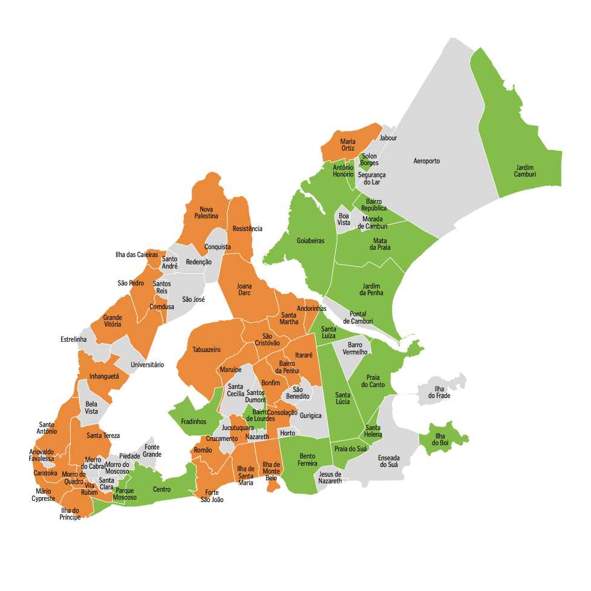
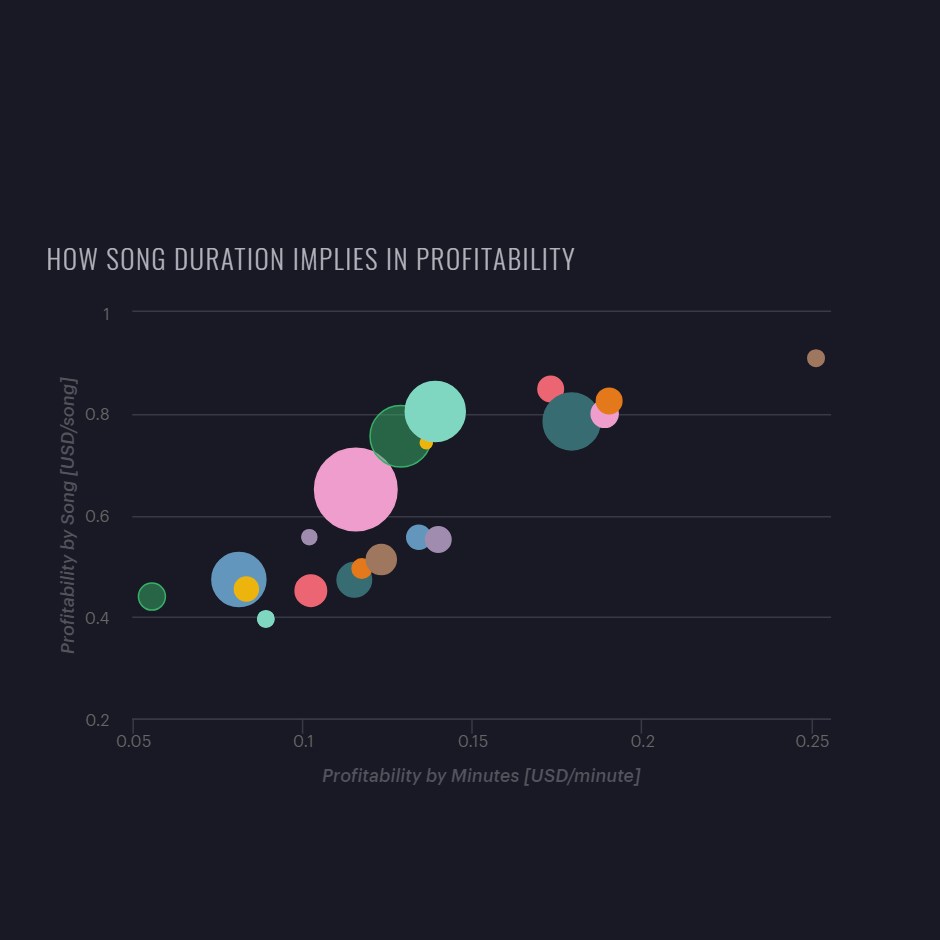
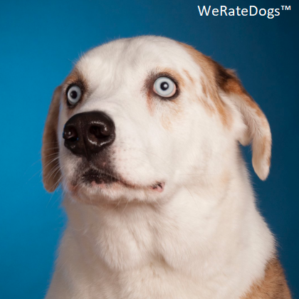
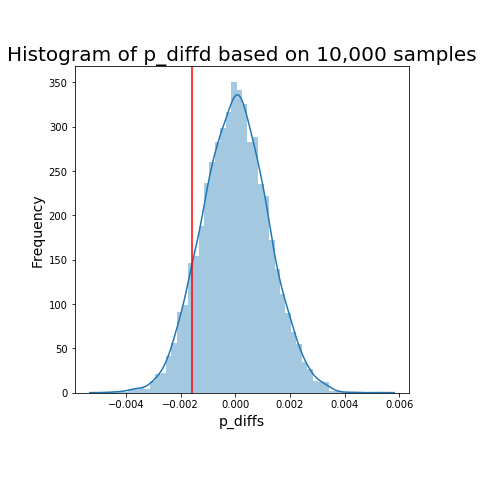
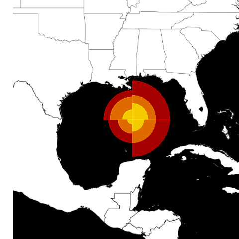
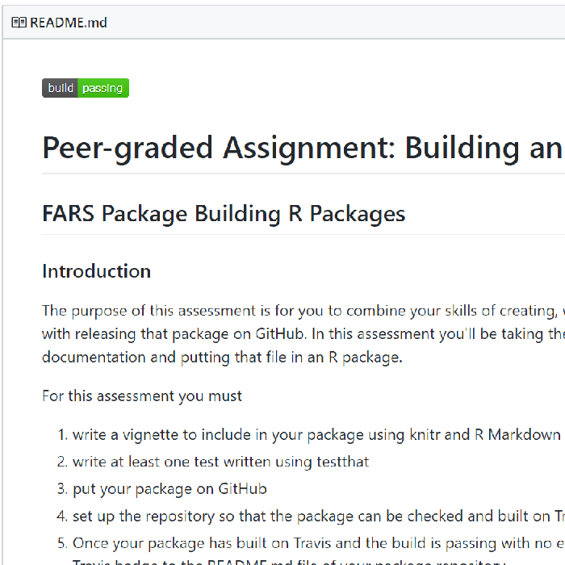

Hello!
Welcome to my personal website. I am delighted to see you here visiting my pages.
In this place, I host my Curriculum Vitae and some other stuff.
Feel free to wander around my pages.
See you!
AH Uyekita
Who Am I?
I am an Electrical Engineer and I passionated in Data Science and Artificial Intelligence since I have started the very famous Data Science Specialization in Coursera. Sadly, I have interrupted my studies in 2016 to dive into a new area of work, running my own business. After an experience for two years, I decided to came back to my origins.

Data Science Projects
Investigate a Dataset
Python 3 Markdown
In this Udacity's project I have performed a Data Wrangling and Data Visualization about the Medical Appointments from Vitória City, Brazil. The dataset is hosted in Kaggle and has almost 100,000 medical records. You can read my conclusion about it reading the nbviewer.
nbviewer
Chinook
SQL Markdown
This project is about the music preferences of a ficticional company called Chinook, this database is available for anyone to make your own study on Github. All queries used to create graphics and to pose questions are available in the Mode Analytics platform.
Mode Analytics
Wrangle and Analyze Data
R Python 3 Markdown
The WeRateDogs™ is a Twitter account which gives rating for dogs, I have used the Twitter API to gather information about the tweets made from all users. Later, I have posed some questions and I have answerrd using the available data. The entirely document is available in nbviewer.
nbviewer
Analyze A/B Test Results
Python 3 Markdown
The A/B Testing is a powerful tool to evaluate if a new version has better performance than the older one. In this project, I have made several hypothesis test to assure the better decision making.
nbviewer
Building a New Geom
R Markdown
This assignment from Coursera aims to create a new "function" to be used to draw a different kind of graphic. The new so-called geom_hurricane will use the ggplot package as bedrock for it advanced geom.
RPubs
Creating an R Package
R Markdown
In this project I have created a new package and I have disposaled it in Github, this package also recieve the Travis CI badge which means it could be run in any computer. The package uses the US FARS data (Fatality Analysis Reporting System) to creates summaries.
Github